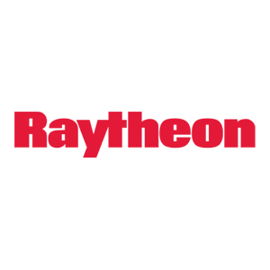

Experience
Communication Team/Lead, 2020-23
- Successfully migrated web-portal infrastructure from Joomla CMS to WordPress.
- Designed, updated and maintained the organization’s website
- Supervise a compact team of volunteers in enhancing the organization's website and crafting a weekly newsletter for parents.
Software Consultant, 2012-13
- Collaborated within diverse teams to design and develop user interfaces, fostering seamless interaction and user-centric experiences.
- Implemented User Interfaces to facilitate visualization and understanding of dynamic, complex datasets.
Vice Chair, 2017-19

- Executed the responsibilities delegated by the Board Chair, ensuring the timely and proficient completion of required tasks.
- Designed and created the PlaySudbury Logo
Senior Software Engineer, 1999-2011

- Designed and implemented a Java web-services-based distributed framework for real-time information assurance assessment during transactions, enhancing the security posture of information systems
- Modeled logistics demand and inventory management strategies for distributed, multi-agent systems
- Supported customers and external contractors
Chief Technical Officer, 2013-16

- Responsible for the design, development, oversight and maintenance of the organization's website, including installation of user-friendly and responsive e-commerce platform for fundraising events and donations.
- Crafted innovative fundraising mechanisms to drive financial support and donor engagement.
Software Engineer, 1996-99

- Developed user interfaces (UIs) for the STARS (Standard Terminal Automation Replacement System) Air Traffic Control Situation Data Display.
- Teamed with Systems Engineers to design an interface to collect and display information from a time-critical distributed battle simulation test-bed.
Assoc. Software Engineer, 1995-96
- Software Maintenance Engineer for high speed monochrome and color laser printers.
- Represented Print Engine Development Unit at customer sites.